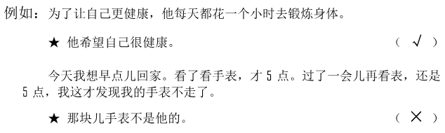
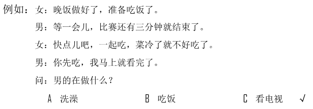
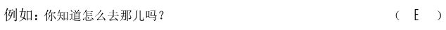
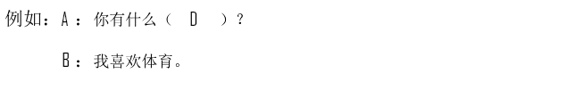
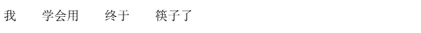
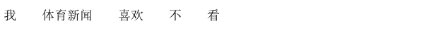

🎧 Phần nghe · Câu 1–40
Bấm phát để bắt đầu nghe. Thời gian làm bài bắt đầu khi bạn nghe hoặc chọn đáp án.
Nghe · Phần 1 · Câu 1–5
Nghe và chọn hình A–F phù hợp.

Nghe · Phần 1 · Câu 6–10
Nghe và chọn hình A–E phù hợp.
Nghe · Phần 2 · Câu 11–20
Nghe và chọn ✓ (đúng) hoặc × (sai).

Câu 11
★聪明人知道机会不常有。
Câu 12
★那儿秋天很短。
Câu 13
★他害怕会迟到。
Câu 14
★名单不用检查了。
Câu 15
★他希望那位先生换个菜。
Câu 16
★奶奶年轻时是历史老师。
Câu 17
★现在西瓜很好吃。
Câu 18
★那个手机卖10000元。
Câu 19
★他的电脑出了点儿问题。
Câu 20
★他喜欢读书。
Nghe · Phần 3 · Câu 21–30
Nghe và chọn đáp án A, B hoặc C.

Câu 21
Câu 22
Câu 23
Câu 24
Câu 25
Câu 26
Câu 27
Câu 28
Câu 29
Câu 30
Nghe · Phần 4 · Câu 31–40
Nghe hội thoại và chọn đáp án A, B hoặc C.

Câu 31
Câu 32
Câu 33
Câu 34
Câu 35
Câu 36
Câu 37
Câu 38
Câu 39
Câu 40
Đọc · Phần 1 · Câu 41–45
Chọn câu A–F phù hợp để ghép với từng câu.

Đọc · Phần 1 · Câu 46–50
Chọn câu A–E phù hợp để ghép với từng câu.
Đọc · Phần 2 · Câu 51–55
Chọn từ A–F điền vào chỗ trống.
Đọc · Phần 2 · Câu 56–60
Chọn từ A–F điền vào chỗ trống của hội thoại.

Đọc · Phần 3 · Câu 61–70
Đọc đoạn văn và chọn đáp án đúng.

Câu 61
中国的很多城市都有好几个名字，像广州市，除了羊城外，人们还叫它花城。
★根据这段话，广州市：
★根据这段话，广州市：
Câu 62
我们学校旁边有家咖啡馆儿，环境不错，我们去那儿边喝咖啡边等小李吧。
★那家咖啡馆儿：
★那家咖啡馆儿：
Câu 63
现在，北京很多公园的门票都很便宜，有的只需要两三块钱。如果你经常去公园运动，还可以办年票，这样不但不用每次去都买票，而且也更便宜了。
★对常去公园的人来说，有了年票：
★对常去公园的人来说，有了年票：
Câu 64
如果想了解一个国家的文化，就不能只看书本，还必须到这个国家走一走、看一看，这样才能明白“文化”二字的意思。
★根据这段话，要了解一个国家的文化，必须：
★根据这段话，要了解一个国家的文化，必须：
Câu 65
上周末我和同事一起去云南玩儿了两天，那里跟北方真的很不一样，我们照了很多照片，都在我电脑里，你要不要看看？
★他：
★他：
Câu 66
我们等了快半个小时，那条街上都没有出租车经过，后来只能坐公共汽车过去了。
★他们一开始打算：
★他们一开始打算：
Câu 67
电视上说，这个月20号动物园会新来两只大熊猫，女儿还没见过大熊猫呢，到时候我们带她去吧。
★他想带女儿：
★他想带女儿：
Câu 68
很多人年轻的时候不注意锻炼，只想着工作，等老了才发现再多的钱也比不上一个好身体，所以工作越忙越应该照顾好自己。
★这段话主要想告诉我们：
★这段话主要想告诉我们：
Câu 69
在中国，去朋友家做客，离开时朋友可能会对你说“慢走”。其实他们的意思是让你在回去的路上小心点儿，不是让你慢点儿走。
★朋友说“慢走”，最可能是什么意思？
★朋友说“慢走”，最可能是什么意思？
Câu 70
这块儿手表是我10岁生日时爷爷送给我的，已经用了很多年了，虽然现在看上去有点儿旧，颜色也变了，但我还是很喜欢它，不愿意换新的。
★那块儿手表：
★那块儿手表：
Viết · Phần 1 · Câu 71–75
Sắp xếp các từ đã cho thành câu hoàn chỉnh.
Phần viết được đối chiếu với đáp án mẫu; bỏ qua khoảng trắng và dấu câu. Điểm hiển thị là điểm luyện tập.

Câu 71
Câu 72

Câu 73
Câu 74

Câu 75
Viết · Phần 2 · Câu 76–80
Nhập chữ Hán phù hợp với pinyin vào từng ô trống.